L'écran en direct

C'est l'écran de la manche en cours. Ce que tu vois en temps réel, tour par tour.
Horloges par circuit (C1, C2, C3…). Si la course utilise plusieurs circuits en même temps, tu as en haut une horloge pour chacun. Chaque horloge marque le temps de cette manche sur ce circuit. Quand l'horloge arrive à zéro, cette manche se termine et vous tournez tous de voie.
Cartes de voie. Une carte pour chaque voiture en piste. Sur chaque carte, tu lis d'un coup d'œil :
- TOTAL — tours cumulés jusqu'à présent dans la manche.
- DERNIER — ton dernier tour complet. C'est ta référence immédiate : tu progresses ou tu chutes ?
- MOYENNE — ton rythme moyen dans la manche (moyenne simple de tes tours, sans compter celui d'échauffement). C'est ce qui commande vraiment pour gagner en endurance : pas le meilleur tour isolé, mais le rythme soutenu.
- MEILLEUR — ton meilleur tour valide de la manche.
Bannière du meilleur tour. Quand quelqu'un signe le tour le plus rapide du moment, un avis mis en avant apparaît. Si c'est le tien, tant mieux. Si c'est celui d'un rival, c'est la référence à battre.
Les trois vues du direct (bouton « Vue »)
Avec le bouton Vue, tu choisis comment les cartes s'affichent, selon le nombre de voies. Il y a trois modes :
1 · Lignes horizontales — une ligne par voie. Recommandée pour peu de voies : chaque voie occupe une ligne large et se lit très confortablement.
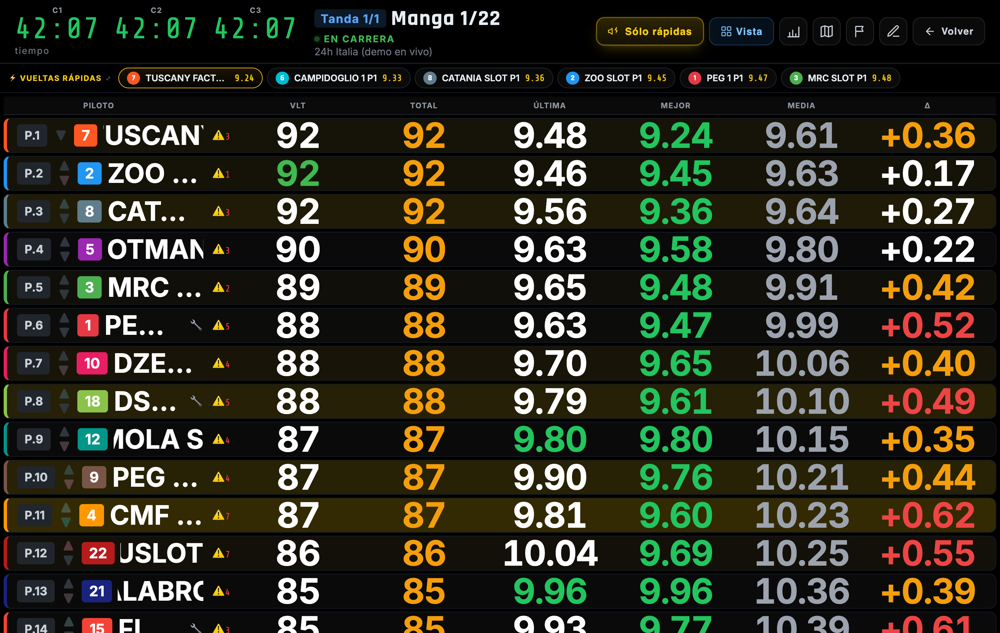
2 · Grille compacte — toutes les pistes à la fois en grille. Idéale pour beaucoup de voies : tu vois tout sans faire défiler.
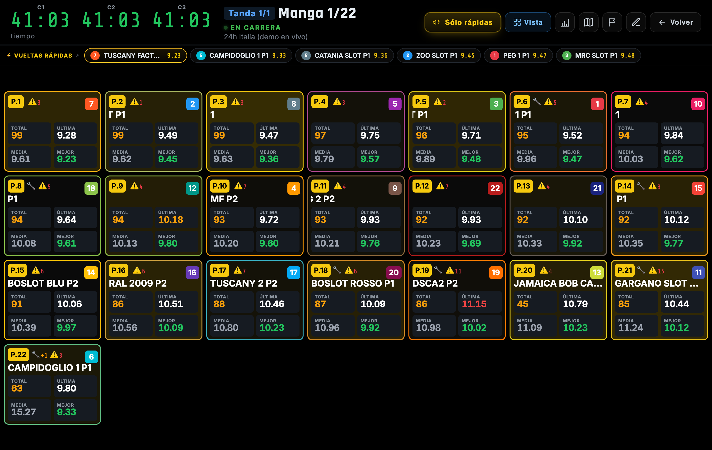
3 · Cartes détaillées — comme la compacte, mais avec TR (tours), SOR (sorties), PIT et Δ visibles sur chaque carte. Plus d'informations par voie d'un coup d'œil.
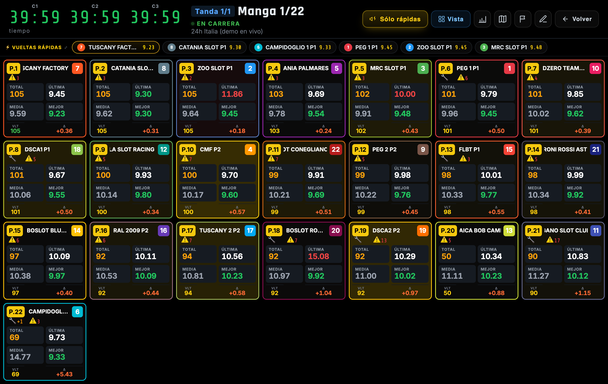
Live-stats : les 3 onglets
Live-stats est la vue de statistiques. Elle a trois onglets et chacun répond à une question différente.
Manche actuelle
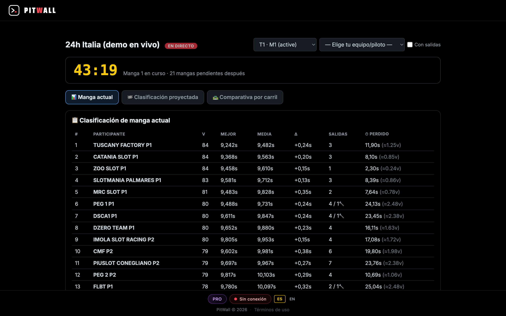
Le classement de cette manche, avec le détail de chaque pilote : T (tours), MEILLEUR, MOYENNE, Δ (delta, ta marge), SORTIES et PERDU (temps perdu en sorties). Regarde-le pour savoir où tu en es MAINTENANT, avec qui tu partages ta voie et qui domine ta manche.
Classement projeté
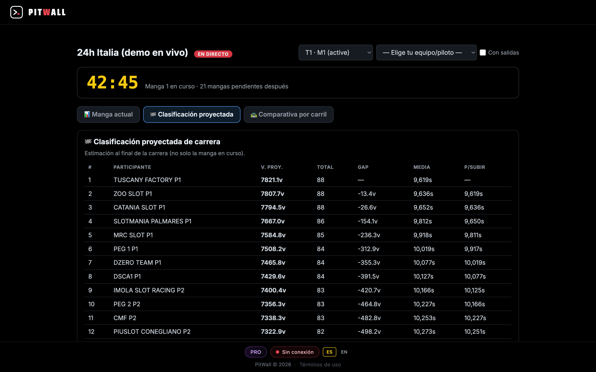
La position estimée à la fin de la course, quand vous aurez tous complété toutes vos manches. C'est celle qui importe vraiment pour savoir si tu es en train de gagner. Regarde-le pour connaître ta position RÉELLE au général, pas seulement dans la manche que tu es en train de courir.
Comparatif par voie
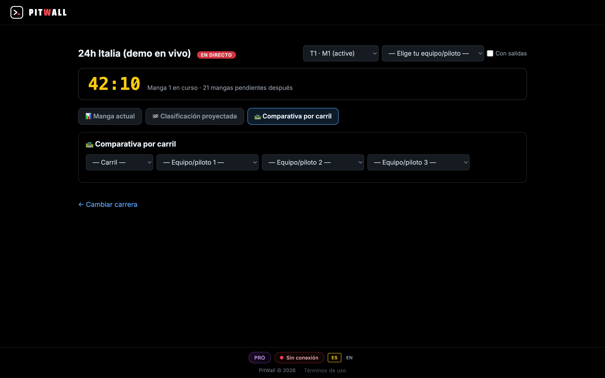
Le rendement de chaque voie. Certaines voies sont plus rapides que d'autres. Ici tu vois les différences entre C1, C2, C3… Regarde-le pour savoir si ta voie actuelle t'aide ou te pénalise, et quelles voies il te reste à rouler.
Manche actuelle = la photo de l'instant. Projeté = comment tu finis. Voie = pourquoi ton rythme change de manche en manche.
Ton panneau (Mon panneau)
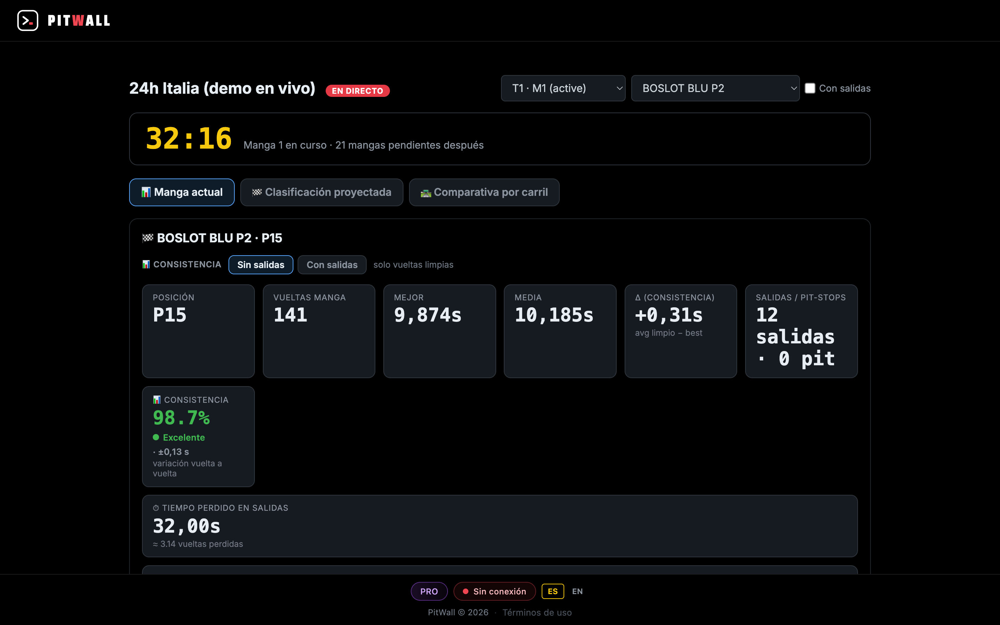
Choisis ton pilote et tu auras ton propre panneau avec des cartes. Une par une :
POSITION. Attention à celle-ci : c'est ta position PROJETÉE de course, pas celle de la manche. Elle te dit où tu vas finir si le rythme se maintient. Si dans ta manche tu es 4e mais que ton panneau dit P1, c'est qu'en additionnant toutes les manches tu es premier. Fie-toi à celle-ci.
TOURS MANCHE. Combien de tours tu as effectués dans la manche actuelle.
MEILLEUR. Ton meilleur tour valide. « Valide » signifie qu'il ne compte pas :
- le tour d'échauffement (le premier, avec le bazar du feu tricolore et le passage initial),
- ni un passage partiel (un tour qui est en réalité un demi-tour mal compté),
- ni des temps en dessous du minimum de la course (passages fantômes impossibles).
Ainsi, ton MEILLEUR est un vrai tour réel, jamais un chiffre offert.
MOYENNE. Ton rythme moyen. Moyenne simple de tes tours de course (inclut sorties et pit-stops ; n'exclut que l'échauffement). C'est le chiffre que la projection utilise pour estimer où tu finis. Baisse ta moyenne et tu montes au général.
Δ (delta). C'est ta moyenne propre moins ton meilleur tour. Autrement dit : combien de marge il te reste. Un Δ petit = tu roules presque toujours à fond, très peu à gratter. Un Δ grand = tu as du rythme mais tu le perds sur beaucoup de tours : c'est là qu'est ton or, dans le fait d'être plus constant. La « moyenne propre » ici ne compte ni sorties ni pits, seulement ton roulage normal.
SORTIES / PIT-STOPS. Combien de fois tu es sorti et combien d'arrêts tu as faits. Chaque sortie te coûte du temps et des positions.
Temps perdu en sorties. Ce que ces sorties t'ont coûté, en secondes. Mets-le en contexte : parfois une seule sortie vaut plus de positions que des dixièmes de rythme sur toute la manche. Ici tu le vois clairement.
PitWall Lap : ta course sur le mobile
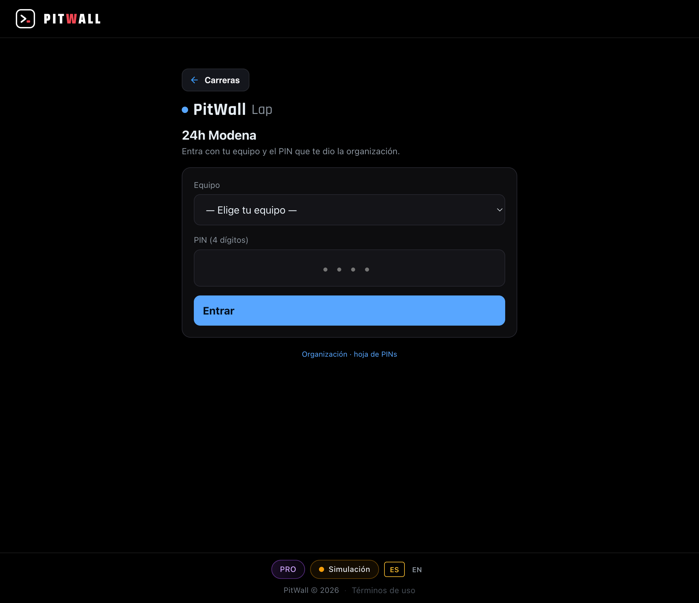
PitWall Lap est le site web que tu ouvres sur le mobile depuis ton stand pour suivre ta course en direct, sans rien installer. C'est uniquement pour les courses d'endurance (par équipes). C'est en lecture seule : tu consultes ton timing, tu ne contrôles pas la course.
Comment tu entres. L'organisation te donne l'adresse (quelque chose comme http://<IP-du-serveur>:3000/lap/<course>) et un PIN à 4 chiffres de ton équipe. Tu ouvres l'adresse, tu choisis ton équipe dans la liste, tu saisis le PIN et tu appuies sur Entrer. Avec Changer d'équipe, tu peux sortir et entrer avec une autre.
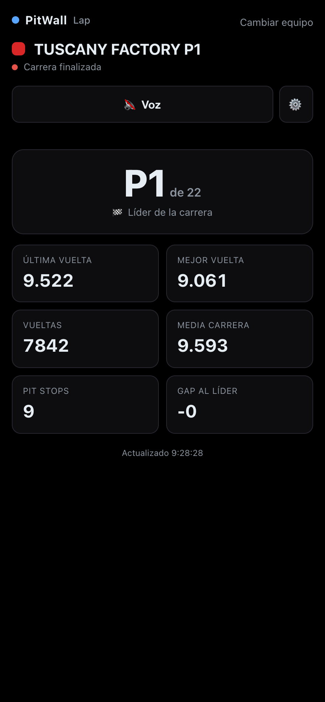
Ton panneau. En haut, ta position en grand : c'est la projetée (où tu vas finir en additionnant toutes les manches), la même que celle que tu vois dans le direct et au général — pas celle de la manche isolée. En dessous, ta distance au leader (« à N tours », « à égalité » ou « 🏁 Leader de la course »). La ligne d'état te dit en direct dans quelle manche et voie tu es et combien il reste (ou « En repos » / « En attente de la prochaine manche » / « Course terminée »). Et les cartes :
- Dernier tour — ton dernier tour (clignote à la mise à jour).
- Meilleur tour — ton meilleur tour valide.
- Tours — total cumulé de toute la course.
- Moyenne course — ton rythme moyen cumulé (celui qu'utilise la projection).
- Pit stops — arrêts effectués.
- Écart au leader — à combien de tours du premier.
S'il y a une projection active, apparaît Estimation à la fin avec ta position estimée et tes tours projetés.
La voix (annonceur de tours). Avec le bouton 🔊 Voix, tu actives l'annonceur (il démarre éteint : il faut toucher l'écran une fois pour que le mobile laisse le son passer). Il t'annonce le temps de chaque tour, et signale les changements de position, la mi-manche, la dernière minute, les 30 dernières secondes et la fin de manche. Dans ⚙️ Réglages de voix, tu actives/désactives chaque avis et, dans le bloc avancé, qu'il annonce toutes les X minutes ta moyenne de voie, les écarts avec les rivaux ou la moyenne pour monter d'une position.
Écran toujours actif. Tant que le panneau est ouvert, l'écran ne s'éteint pas ; au bout de 30 secondes sans le toucher, il s'assombrit (pour ne pas user la batterie ni déranger), mais la voix continue d'annoncer. Touche l'écran pour l'éclairer à nouveau.
Consistance
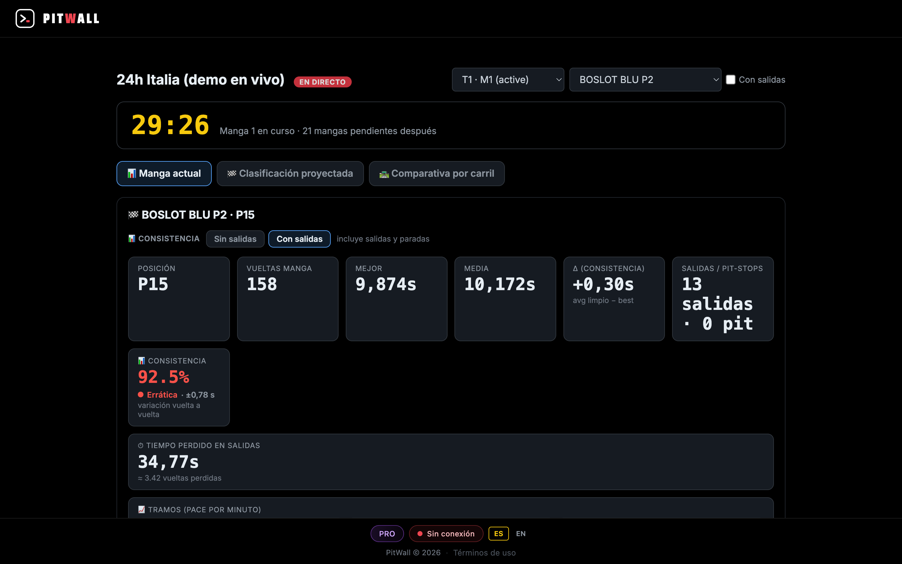
La carte la plus importante pour progresser. La consistance mesure ta régularité tour par tour : si tu fais toujours le même temps ou si tu fais des écarts.
Ce qu'est le %. C'est 100 moins ta variation relative (le CV, coefficient de variation). 100 % serait un robot parfait, toujours identique. Plus c'est élevé, plus tu es régulier. Sur des données réelles, la norme est entre 90 % et 99 %. C'est la même formule qu'utilise TicTac, calculée sur tes tours de rythme (en écartant les incidents ponctuels).
Le ±ÉT en secondes (plus utile que le %). À côté du %, tu verras quelque chose comme ±0,13 s. C'est ton écart-type : combien de secondes, en plus ou en moins, tu oscilles d'un tour à l'autre. Regarde davantage ceci que le % : un ±0,13 s te dit directement à quel point tu roules serré, et discrimine mieux entre deux pilotes qui à première vue ont un % semblable. Objectif : réduire ton ±ÉT.
Niveaux de couleur. Le système te classe selon ta variation :
- Excellent — variation en dessous de 1,5 %. Rouler comme une horloge.
- Bonne — entre 1,5 % et 2,5 %. Solide.
- Irrégulière — entre 2,5 % et 4 %. Tu fais des écarts, il y a du temps à gagner en étant plus fin.
- Erratique — au-dessus de 4 %. Beaucoup d'instabilité ; concentre-toi sur des tours propres jusqu'au bout avant d'attaquer.
Bascule : Sans sorties / Avec sorties.
- Sans sorties — ton rythme pur. Retire sorties, pits et incidents. Elle répond : quand je roule bien, suis-je régulier ? Utilise-la pour peaufiner ta conduite.
- Avec sorties — la régularité réelle de ton relais. Elle inclut TOUT : sorties, pits, trafic. Elle répond : vraiment, tel quel, quel rythme ai-je livré ? Utilise-la pour voir l'impact réel de tes erreurs. Elle ressort en général pire que « Sans sorties », et cette différence est exactement ce que te coûtent les incidents.
Les graphiques
Chaque graphique a trois modes. Ils changent selon ce que tu veux voir.
Temps par tour. Le classique : chaque point est un tour et son temps. Tu lis la forme de ta course. Baisses-tu en t'échauffant ? Chutes-tu à la fin à cause de la voiture ou de toi ? Un pic isolé (une sortie) ou une tendance ? Il sert à voir où tu gagnes et où tu perds au fil du relais.
Par rapport à la moyenne
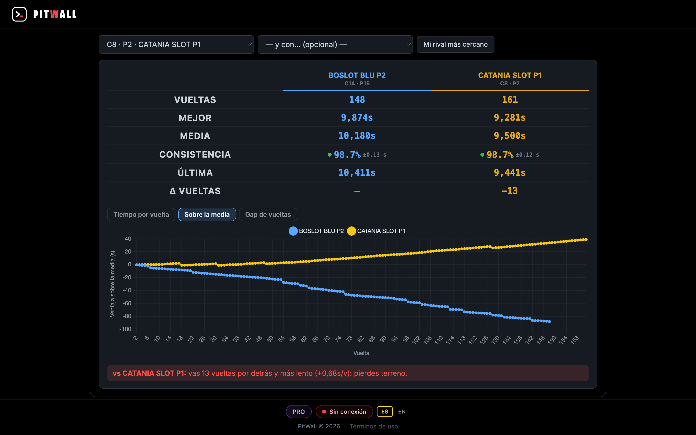
Ici, chaque tour est dessiné comme différence par rapport à ta moyenne : au-dessus = tour plus lent, en dessous = plus rapide. C'est la meilleure vue de la consistance : plus ta ligne est plate et collée au zéro, plus tu es régulier. Les pics vers le haut sont tes mauvais tours. Objectif visuel : aplatir la ligne.
Écart de tours
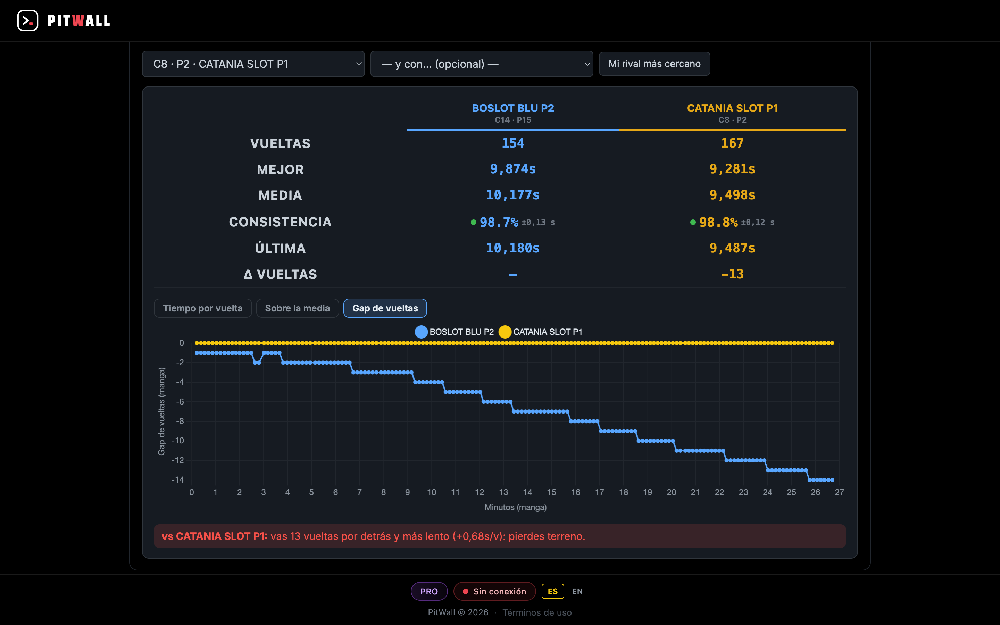
Ta distance au leader au fil du temps (axe X = minutes de la manche ; axe Y = écart au leader que tu choisis). Monte = tu perds du terrain ; baisse = tu recolles. Il sert à voir À QUEL MOMENT de la manche tu as gagné ou perdu la course, et si l'écart est stable ou t'échappe.
Projection et écarts
Position projetée vs position de manche. Ce sont des choses différentes et les deux importent :
- De manche — où tu en es dans la manche que tu cours maintenant. Utile pour ton duel direct en piste.
- Projetée — où tu vas finir la course en additionnant toutes les manches. C'est ta position RÉELLE au général. La projection estime tes tours totaux en divisant le temps total de course par ta moyenne. Baisser ta moyenne = meilleure projection.
Important : la position projetée est la même partout (carte du direct, Classement Général et panneau Lap). Si tu vois P2 à un endroit, tu vois P2 partout. Il n'y a pas deux vérités.
Types d'écart.
- Écart au leader — à combien tu es du premier.
- Écart en tours — la distance exprimée en tours (plus intuitif en endurance : « je suis à un tour »).
- Écart par minute — comment la distance évolue avec le temps, pour voir si tu recolles ou si tu décroches.
Quand deux pilotes ont le même nombre de tours, c'est la virgule qui départage : la fraction de tour que tu avais faite juste au moment où le drapeau est tombé. Rouler à fond jusqu'au bout peut te donner cette fraction en plus qui te fait gagner une position.
La vue Résultats (après la course)
Quand la course se termine, Résultats est l'endroit où l'on analyse tout tranquillement. Elle a plusieurs onglets ; chacun répond à une question différente. En haut, tu vois toujours le meilleur tour de la course (qui et sur quelle voie).
Comparatif (la grille par voie)
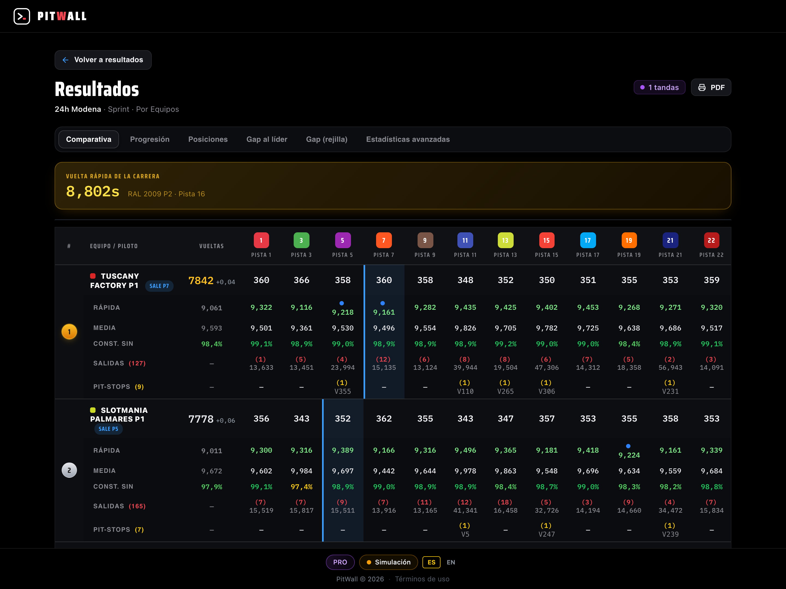
C'est le tableau principal. Une ligne par participant et, pour chaque voie par laquelle il est passé, cinq données empilées :
- Rapide — ton meilleur tour sur cette voie. Le point bleu + MEILLEUR marque le meilleur tour de cette voie parmi tous.
- Moyenne — ton rythme moyen sur cette voie.
- Const. sans — ta consistance (sans sorties) sur cette voie, en %.
- Sorties — combien de fois tu es sorti là (et, dessous, le temps perdu).
- Pit-stops — arrêts sur cette voie (avec le n° de tour, par ex. T355).
Il sert à voir sur quelles voies tu rends le mieux ou le moins bien, pas seulement ton chiffre global. Le rectangle bleu marque ta voie de départ.
Courses à passages / répétition de voie. Si la même voie est courue plusieurs fois, chaque voie se dédouble par occurrence (1/2, 2/2…), pour comparer ton 1er passage avec le 2e par le même endroit.
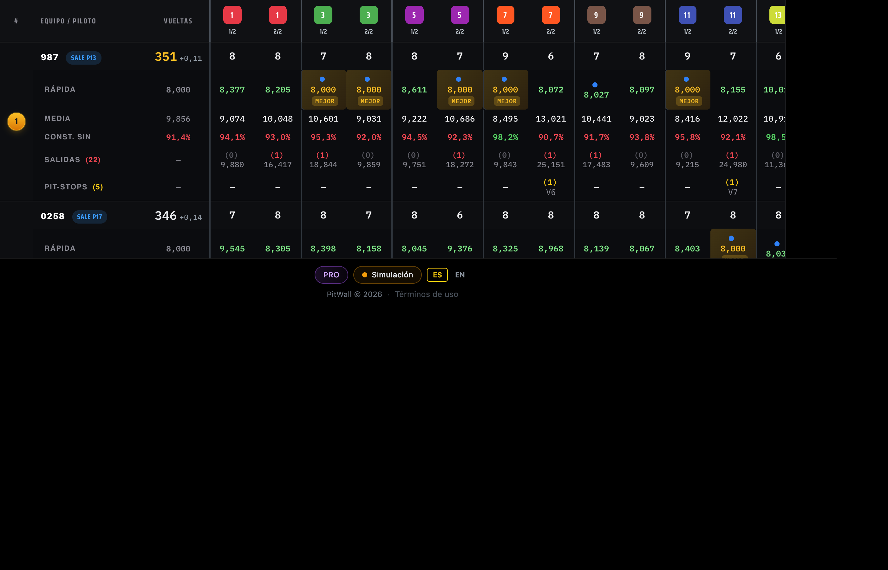
Progression (tour par tour)
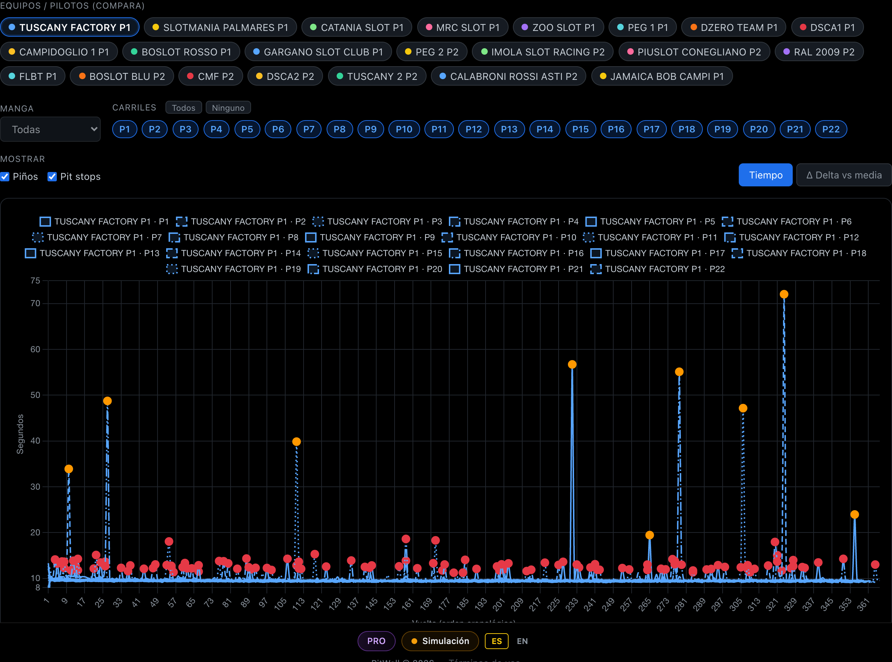
Chaque tour de la course, dans l'ordre. Tu peux choisir qui comparer, filtrer par manche ou par voie, et afficher/masquer sorties (points rouges) et pit-stops (oranges). Avec le bouton Δ Delta vs moyenne, chaque tour est dessiné comme différence par rapport à ta moyenne (meilleure vue pour juger ta régularité : plus c'est plat, mieux c'est). Il répond : ai-je baissé en m'échauffant ? me suis-je effondré à la fin ? était-ce un pic isolé ou une tendance ?
Positions
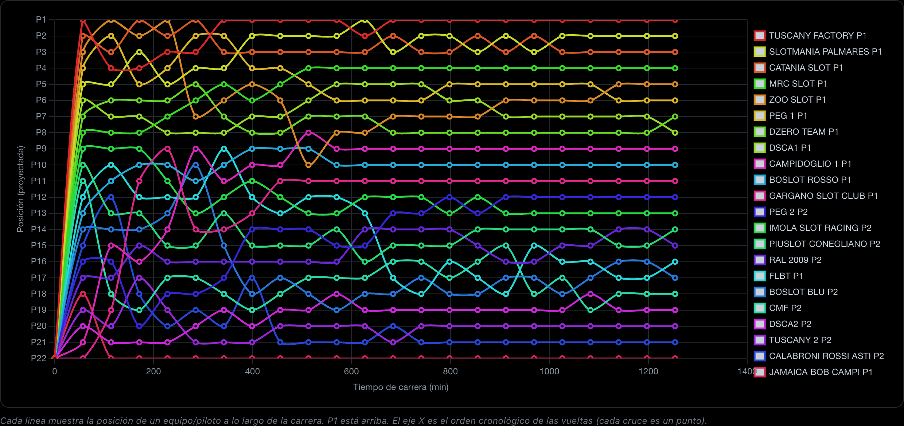
Une ligne par participant ; l'axe vertical est la position (P1 en haut). Si ta ligne monte, tu perds des positions ; si elle baisse, tu en gagnes. Il sert à voir à quel moment de la course s'est décidé ton résultat.
Écart au leader
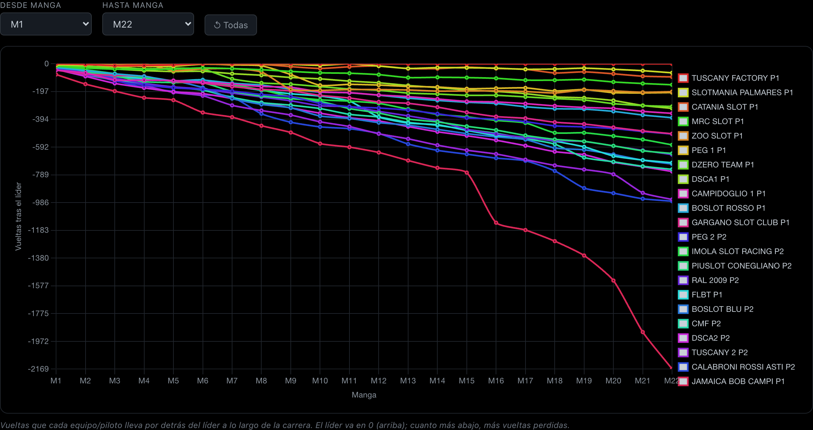
Ta distance au leader au fil du temps (tu peux borner la plage de manches). La ligne qui baisse = tu te rapproches ; qui monte = tu t'éloignes. Il répond : à quelle manche ai-je décroché ou récupéré ?
Écart (grille)
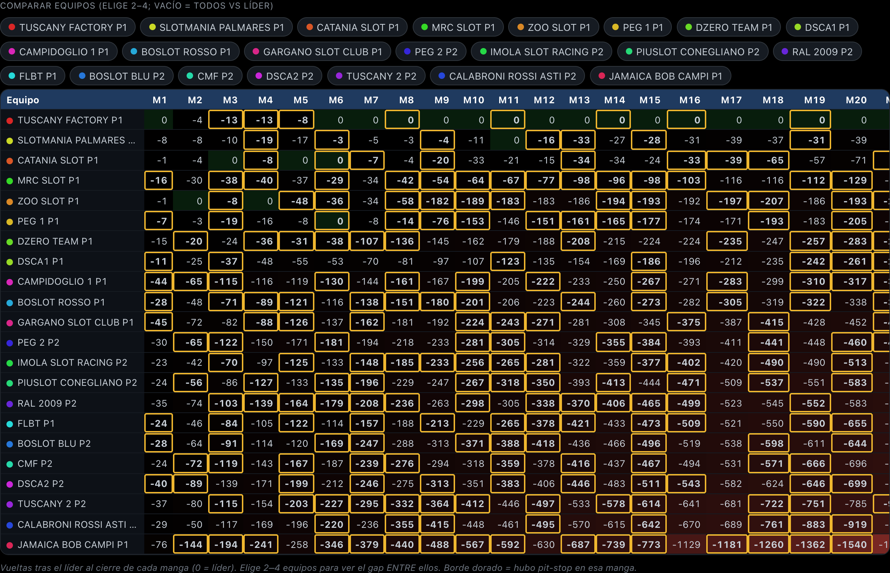
La même idée mais en tableau : lignes = équipes, colonnes = manches, et chaque cellule les tours de retard à la clôture de cette manche (0 = leader). Le bord doré signale qu'il y a eu un pit-stop dans cette manche. Tu peux choisir 2 à 4 équipes pour voir l'écart entre elles (pas seulement contre le leader).
Statistiques avancées
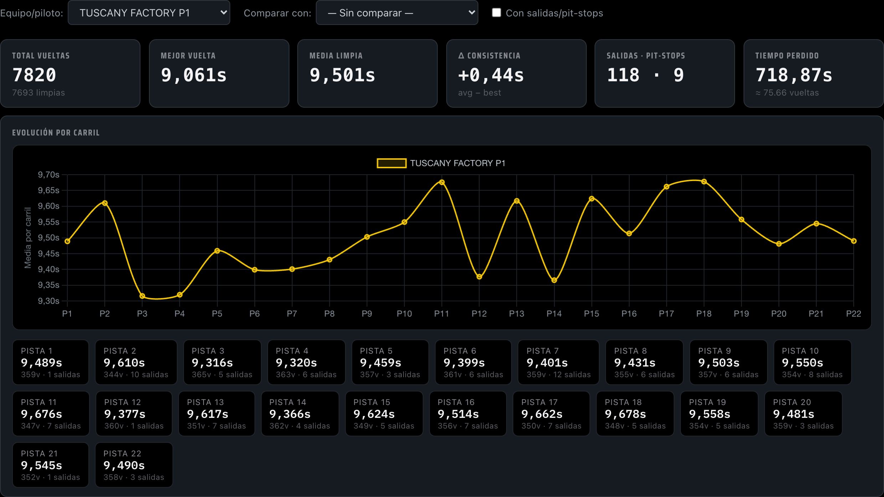
L'analyse en profondeur d'un participant : total de tours (et propres), meilleur, moyenne (avec bascule avec/sans sorties), Δ consistance, sorties · pit-stops et temps perdu. En dessous, l'évolution par voie (ta moyenne piste par piste, pour voir où tu as été le plus rapide) et une carte par voie. Avec Comparer avec, tu choisis un rival et une table face à face est générée avec les différences colorées (vert = mieux, rouge = pire).
Classement Le Mans (équipes)
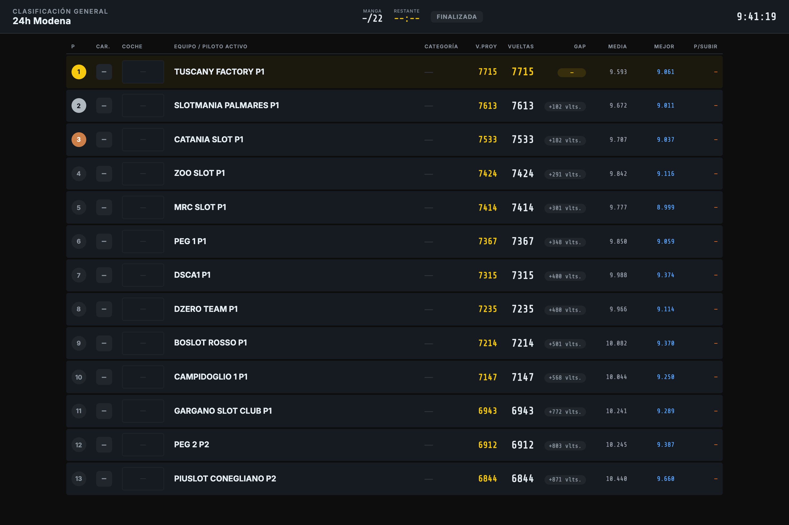
Dans les courses par équipes existe en plus le classement Le Mans : le général en grand, avec tours projetés, total, écart au leader, moyenne, meilleur et P/Monter (le rythme dont tu aurais besoin pour rattraper celui de devant). Idéal pour les courses longues.
Glossaire
- Consistance — ta régularité tour par tour. 100 moins ta variation relative. Plus c'est élevé = plus constant.
- ±ÉT (écart-type) / CV — le ±ÉT, ce sont les secondes que tu oscilles de tour en tour (regarde ce chiffre). Le CV est cette oscillation en pourcentage relatif à ton rythme ; le % de consistance est 100 − CV.
- Moyenne — moyenne simple de tes temps de tour, sans celui d'échauffement. Inclut sorties et pits. C'est celle qu'utilise la projection.
- Moyenne propre — ta moyenne en comptant seulement les tours normaux (sans sorties). Elle sert pour le Δ et pour détecter les incidents, pas pour projeter.
- Warmup (tour d'échauffement / passage partiel) — le premier vrai tour de la manche, avec les artefacts du feu tricolore et du passage initial. Ne compte ni pour la moyenne, ni pour le meilleur, ni pour la consistance.
- Sous-minimum — un temps en dessous du minimum de tour de la course. Passage fantôme impossible ; il est toujours écarté.
- Sortie (exit) — tu es sorti de la piste. Compte pour la moyenne (c'est du temps réel perdu) mais pas pour ton meilleur tour.
- Pit-stop — arrêt aux stands. Compte comme du temps, pas comme meilleur tour.
- Virgule — la fraction de tour que tu avais faite au moment où le drapeau est tombé. Départage quand vous avez le même nombre de tours.
- Projection — estimation de ton résultat final en additionnant toutes les manches : temps total de course divisé par ta moyenne.
- Écart — ta distance à une autre voiture (ou au leader), en temps, en tours ou par minute.
- PitWall Lap — le site web mobile de ton équipe (accès par PIN) : ta position projetée, tes cartes de rythme et la voix qui annonce les tours. Seulement dans les courses par équipes.
- Occurrence — chaque fois que tu cours la même voie dans les courses à passages/répétition de voie (
1/2,2/2…) ; permet de comparer un passage avec un autre. - P/Monter — dans le classement Le Mans, le rythme (moyenne par tour) dont tu aurais besoin pour atteindre l'équipe de devant.
- Voie de départ — la voie depuis laquelle tu as démarré ; dans la grille des résultats, elle est marquée par un cadre bleu.
Regarde ta position projetée pour savoir où tu finis, baisse ta moyenne pour monter, et aplatis ta consistance (réduis le ±ÉT) pour arrêter d'offrir du temps tour après tour.